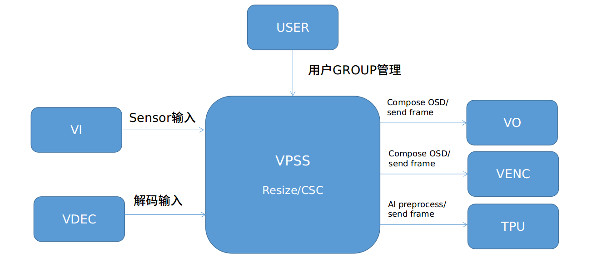

6.2. 设计概述¶
6.2.1. 系统架构¶
以下为VPSS基本概念
GROUP
VPSS对用户提供组（ GROUP ）的 概念。 最大个数请参见VPSS_MAX_GRP_NUM 定义， 各 GROUP分时复用 VPSS 硬件，硬件依次处理各个组提交的任务。
CHANNEL
VPSS组的通道。VPSS 硬件提供多个物理信道，每个信道具有缩放、裁剪等功能。它通过绑定物理信道，将物理信道输出作为自己的输入，把图像缩放成用户设置的目标分辨率输出 。
Crop
裁剪，分为 2种：组裁剪以及物理通道裁剪
− 组裁剪， VPSS 对输入图像进行裁剪。
− 物理信道裁剪， VPSS 对各个物理通道的输出图像进行裁剪。
像素格式转换
支持输入输出图像的数据格式转换。
−支持YUV420 planar, YUV422 planar, RGB planar, RGB packed, BGR packed互相转换。
Scale
缩放对图像进行缩小放大 。 物理通道水平、垂直最小支持 128 倍缩小，最大支持128倍放大。
Mirror/Flip
Mirror即水平镜像 Flip 即上下翻转。 可使用 Mirror + Flip 实现 180 旋转。
Overlay/Overlayex
视频叠加区域，调用RGN 对 VPSS 通道的输出图像叠加位图，支持位图 格式ARGB4444 、 ARGB1555 、 ARGB8888 、256 LUT(ARGB4444), Font-based。
固定角度旋转
调用GDC对 VPSS 通道的输出图像处理。支持90度以及270度固定角度的旋转功能。
Vpss模块在系统中的位置如下图所示：
{kind=link}

通过调用SYS模块提供的binding接口，VPSS模块可以与VI/VDEC等输入模块进行绑定，将解码以及Sensor的数据送到VPSS进行处理，可以实现图像的缩放以及色彩空间的转换等功能。同时也可以通过binding接口，将VPSS模块处理之后的图像，经过OSD的合成送到VO/VENC模块，也支持 做一些简单的Deep Learning前处理，然后将处理后的图片送到TPU进行Deep Learning运算。
表格6- 1 VPSS 功能限制
工作模式 |
功能 |
||
|---|---|---|---|
组裁剪 |
缩放 |
通道裁剪 |
|
VI_OFFLINE_VPSS_OFFLINE |
支持 |
支持 |
支持 |
VI_OFFLINE_VPSS_ONLINE |
不支持 |
支持 |
支持 |
VI_ONLINE_VPSS_OFFLINE |
支持 |
支持 |
支持 |
VI_ONLINE_VPSS_ONLINE |
不支持 |
支持 |
支持 |
注意
注意：当VPSS ONLINE时，最多只能有两组GRP分别接收前端两个sensor来的数据，无法服务其他不同源的需求
6.2.2. 注意事项¶
VPSS数据处理流程图如下图6-1，有两组INPUT。当单一INPUT使用时，可以有四组通道输出；当两组INPUT使用时，则第一组INPUT只有一组通道输出，第二组INPUT只有三组通道输出。
图表6- 1 CV184x的数据流程图

CV184x VPSS硬件规格